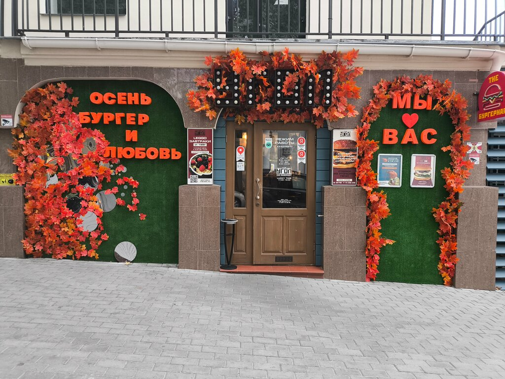

Севастополь
Как нас найти.

улица Маяковского, 5
Ленинский район · Остановка «Площадь Лазарева»
Открыть Яндекс Карты ↗Часы работы
- Пн–Чт
- 10:00–22:00
- Пт–Вс
- 10:00–23:00

Ленинский район · Остановка «Площадь Лазарева»
Открыть Яндекс Карты ↗